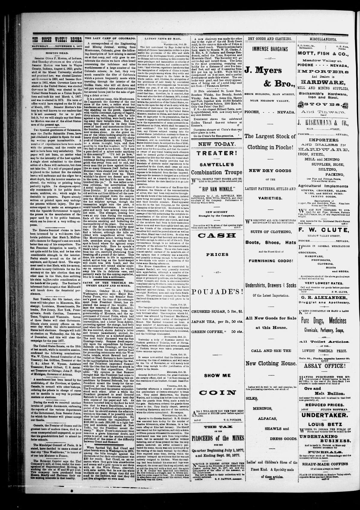

Cause of the Trouble Between Grant and Sumner.Causa del problema entre Grant y Sumner.
The Pioche Weekly Record. Pioche, Nev., November 3, 1877. Page 2. Published by Record Pub. Co. A weekly newspaper, 1877–1900.The Pioche Weekly Record. Pioche, Nev., 3 de noviembre de 1877. Página 2. Publicado por Record Pub. Co. Periódico semanal, 1877–1900. View the originalVer el original

The newspaper reported on a historical misunderstanding between President Grant and Senator Sumner regarding General Babcock's expenditures from the secret service fund for San Domingo versus the treaty for the acquisition of the Dominican Republic. According to Major Poore's statement, Sumner believed the President wanted him to defend the expenditure, while the President actually meant the acquisition treaty.El periódico reseñó el histórico malentendido surgido entre el presidente Grant y el senador Sumner con motivo de las erogaciones del fondo de servicios secretos realizadas por el general Babcock en Santo Domingo frente al tratado para la anexión de la República Dominicana. Conforme a las declaraciones del mayor Poore, Sumner creyó que el gobernante deseaba que defendiera el desembolso pecuniario, cuando el mandatario aludía en realidad al tratado de anexión.
FULL TEXT:TEXTO COMPLETO:
CAUSE OF THE TROUBLE BETWEEN GRANT AND SUMNER.CAUSA DEL PROBLEMA ENTRE GRANT Y SUMNER.
CHICAGO, October 26.—A Tribune Washington special says: Major Ben. Perley Poore, who was Senator Sumner’s guest at the time of his estrangement from President Grant, has explained the cause of the trouble. He says the removal of James M. Ashley, ex-congressman from Ohio, from the governorship of Montana, and the appointment of Colonel Potts, which had just happened, was the subject of table conversation, and a letter from Ashley, protesting against the change, had been read when the President was announced. He was received, shown Ashley’s letter and became immediately excited, denouncing Ashley as a mischief-maker. The next topic discussed was the San Domingo treaty. Sumner dwelt especially upon the expenditure by General Babcock on San Domingo, of the large sum taken from the secret service fund for promoting intercourse with the West India islands, which Seward had prevailed on Thad. Stevens to have inserted in the appropriation bill during the war, and the President impressed Sumner with the idea that he feared an attack in congress for that expenditure. Poore adds: “My opinion is that Sumner thought that the President had come to enlist his services in defending this expenditure by General Babcock, but the President meant the treaty for the acquisition of the Dominican republic. The President and the senator misunderstood each other. After a while the President promised to send General Babcock to call on the senator next day with copies of the paper and left. As Sumner escorted him to the door he told him that he was a Republican, a supporter of the Republican administration, and that he should sustain the administration in this case, if he possibly could, after he had examined the papers. He meant to sustain the expenditure of $100,000 in cash ($50,000 in a light battery and muskets purchased at New York), but the President meant the treaty.” Major Poore’s statement thus removes a grave historical doubt, and seems to set at rest the stories recently published of the cause of the difficulty between Grant and Sumner.CHICAGO, 26 de octubre.—Un despacho especial de Washington del Tribune dice: El mayor Ben. Perley Poore, quien fue huésped del Senador Sumner en el momento de su alejamiento del presidente Grant, ha explicado la causa del problema. Dice que la remoción de James M. Ashley, ex congresista de Ohio, de la gobernación de Montana, y el nombramiento del coronel Potts, que acababa de suceder, fue el tema de conversación en la mesa, y una carta de Ashley, protestando contra el cambio, había sido leída cuando el Presidente fue anunciado. Fue recibido, se le mostró la carta de Ashley y se excitó inmediatamente, denunciando a Ashley como un hacedor de daño. El siguiente tema discutido fue el tratado de Santo Domingo. Sumner se detuvo especialmente en el gasto por el general Babcock en Santo Domingo, de la gran suma tomada del fondo del servicio secreto para promover el comercio con las islas de las Indias Occidentales, que Seward había persuadido a Thad. Stevens de insertar en el proyecto de asignaciones durante la guerra, y el Presidente impresionó a Sumner con la idea de que temía un ataque en el congreso por ese gasto. Poore añade: «Mi opinión es que Sumner pensó que el Presidente había venido a enlistar sus servicios en la defensa de este gasto por el general Babcock, pero el Presidente se refería al tratado para la adquisición de la República Dominicana. El Presidente y el senador se malentendieron mutuamente. Después de un rato el Presidente prometió enviar al general Babcock a visitar al senador al día siguiente con copias de los documentos y se fue. Mientras Sumner lo acompañaba a la puerta le dijo que era un Republicano, un partidario de la administración Republicana, y que sostendría a la administración en este caso, si posiblemente pudiera, después de haber examinado los documentos. Se refería a sostener el gasto de $100,000 en efectivo ($50,000 en una batería ligera y mosquetes comprados en Nueva York), pero el Presidente se refería al tratado.» La declaración del mayor Poore así remueve una grave duda histórica, y parece poner fin a las historias recientemente publicadas sobre la causa de la dificultad entre Grant y Sumner.
This collection gathers the coverage of the Dominican Republic in the American press, in the order it was published.Esta colección reúne la cobertura de la República Dominicana en la prensa estadounidense, en el orden en que se publicaron.